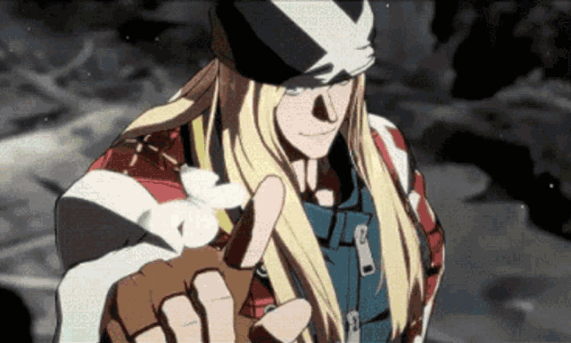

A simple guy from the 20th century, Axl Low, would be flung into the far future due to the mysterious time slips caused by him being bound to I-No as a result of the universe. Being separated by his girlfriend Megumi, all Axl wants is to be reunited again, though he knows he can never go back unless he risks changing the now future full of his friends. Being stuck in the 22nd century, he carries on by joining sol and the others in their numerous gear-related adventures and investigations, hoping he can somehow reunite with Megumi. Over time, he is repeatedly flung back and forth through the timeline and is eventually saved by I-No. She gives him words of advice, seeing how depressed he is at his current state in life.
Despite his fear of his powers, he helps Sol and the others stop the Universal Will by learning to control his time manipulation skill and stay in the current timeline. Afterward, he joins the cast to stop Happy Chaos and I-No. When they find her weak spot, he sadly realizes why they were connected and familiar with one another; that I-No was the alternate timeline version of his girlfriend, and he is the alternate timeline of her version of her lover, Will. As she dies, I-No uses the last of her power to repay Axl and bring Megumi to the current time period.
